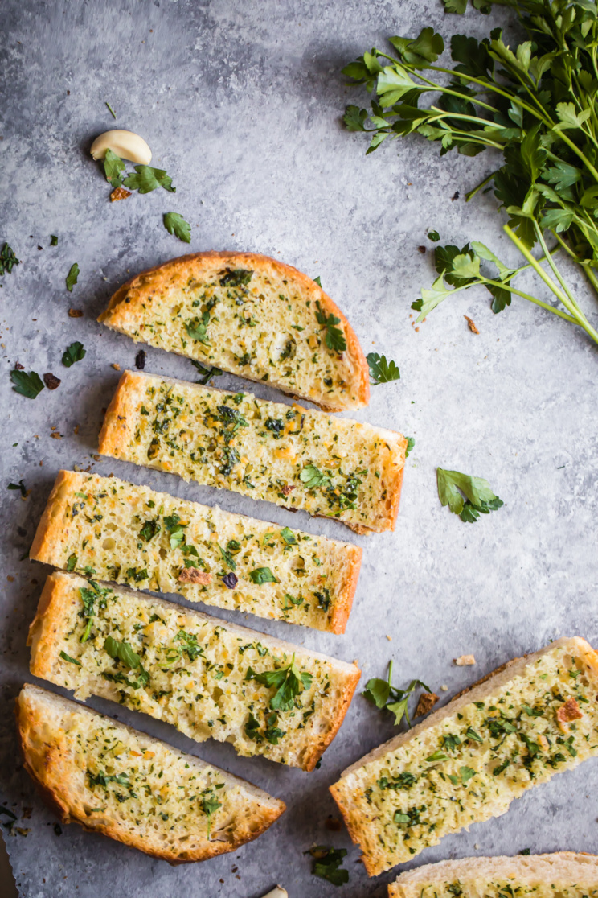

Garlic Bread

Description
Ingredients
- 1 pound Italian loaf or French loaf
- 1/2 cup softened unsalted butter (can also use salted)*
- 4 cloves garlic, finely minced
- 1 tablespoon finely chopped fresh parsley
- ⅛ teaspoon sea salt
- Optional:
- ¼ cup freshly grated parmesan cheese
- OR
- ½ cup shredded mozzarella cheese
- For garnishing:
- Extra parsley and chives
Steps
- Preheat oven to 425 degrees F and line a large baking sheet with parchment paper or foil. Slice bread in half lengthwise and place on a large baking sheet, cut sides up.
- In a medium bowl, mix butter, garlic, parsley and salt together until well combined. Spread evenly over bread.
- Bake for 10-15 minutes or until slightly golden brown on the edges. If you want to add cheese, add it the last 2 minutes of baking. If you like a crispier garlic bread, bake for 3-5 minutes more, watching carefully until it is as golden as you like.